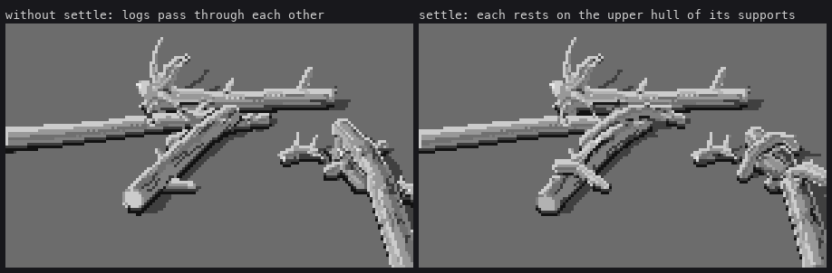
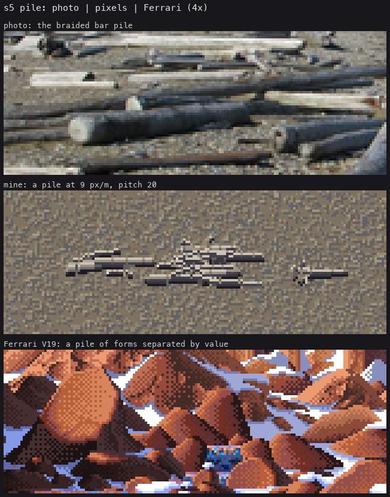
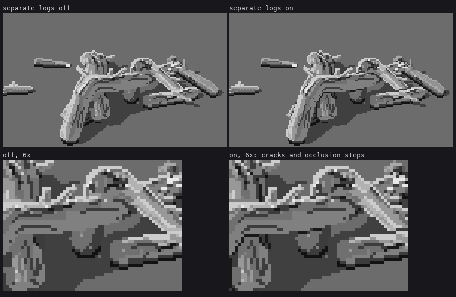
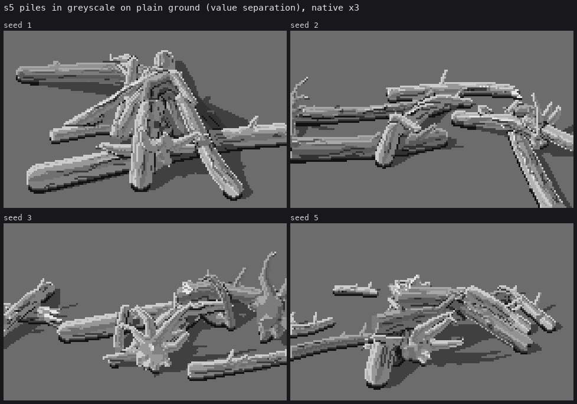
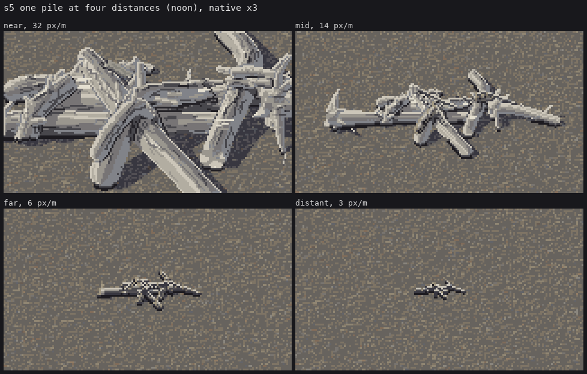

9. Piles
Trigger: more than one log. On a river bar, driftwood is almost never alone.
A pile is two problems. Placement: logs have to rest on each other the way stranded logs do. Separation: where they cross, each log has to stay readable against the one behind it, by value, not by outline.
Placement: settle on the upper hull
Physics only as far as the painting needs. Logs are placed largest first, so the big trunks form the base. Each new log's axis height is the upper convex hull of its support profile: at every point along it, the higher of the gravel and the tops of the logs already placed beneath. The hull makes the log rest on its highest supports and span the gaps between them in a straight line, like a real log bridging two others.
# code/pile.py
def top_of(lg, x, y):
"""height of log lg's upper surface above ground point (x, y), or -inf if not over it."""
...
def upper_hull(t, h):
pts = sorted(zip(t, h))
hull = []
for p in pts:
while len(hull) >= 2:
(x1, y1), (x2, y2) = hull[-2], hull[-1]
if (x2 - x1) * (p[1] - y1) - (y2 - y1) * (p[0] - x1) >= 0:
hull.pop()
else:
break
hull.append(p)
hx, hy = zip(*hull)
return np.interp(t, hx, hy)
def settle(lg, placed, sink=0.015):
"""lower/raise lg so it rests on the ground and on the logs already placed."""
tt = np.linspace(0, 1, 4 * n)
...
h = R - sink # on the gravel
for q in placed:
for j in range(len(tt)):
tp = top_of(q, P[j, 0], P[j, 1])
if tp > -np.inf:
h[j] = max(h[j], tp + R[j] * 0.97) # or on a log beneath
z = upper_hull(tt, h)

figs.py settlefig replaces pile.settle with the identity for the left panel.
Variety is what makes it a pile
My first piles all pointed within 15° of one direction, at similar lengths. The critic, round 10: "stacked lumber, or at 9 px/m ... a spaceship glyph".

The photo above it shows logs at every angle, crossing each other, short broken pieces among long trunks, and several round ends facing the camera: big pale discs with dark rims, the most readable shapes in the photograph. The placement now draws from that mix:
# code/pile.py, make_pile
L = r * (rng.uniform(10, 22) if rng.random() > 0.33 else rng.uniform(3.5, 8)) # a third short pieces
u = rng.random()
if u < crossing: # 35%: crossing at any angle
yaw = flow_yaw + rng.uniform(30, 150)
elif u < crossing + 0.15: # 15%: pointing at the camera, ends toward the viewer
yaw = 90 + rng.normal(0, 18)
else: # the rest: along the old flow
yaw = flow_yaw + rng.normal(0, 14)
...
kind='grey' if rng.random() < grey_frac else 'drift' # a quarter less bleached, on a darker ramp
The less-bleached grey logs matter more than they sound. In the photo not every log is silver, and a mix of values separates a pile better than any line could.
Separation by value
Ferrari's rock pile in V19 never outlines a boulder: each is a value step lighter or darker than its neighbour. For logs, three mechanisms do it:
- Cast shadows from the logs above, as a family jump (lesson 2, rule 5). This does most of the work.
- A contact crack where one log rests on another.
- An occlusion step, where a log passes in front of another in nearly the same tone.
# code/render.py
def separate_logs(cv, buf, logs, cam):
obj = buf['obj']; t = buf['t']; P = buf['P']
wood = obj >= 0
for dy, dx in ((1, 0), (-1, 0), (0, 1), (0, -1)):
o2 = np.roll(np.roll(obj, -dy, 0), -dx, 1) # neighbour value at (y+dy, x+dx)
t2 = np.roll(np.roll(t, -dy, 0), -dx, 1)
s2 = np.roll(np.roll(cv.step, -dy, 0), -dx, 1)
# pixel p is a REAR log pixel next to a FRONT log pixel
rear = wood & (o2 >= 0) & (o2 != obj) & (t2 < t - 0.02)
for y, x in zip(*np.nonzero(rear)):
front = logs[o2[y, x]]
close = front.sdf(P[y, x][None])[0] < 2.2 / cam.scale
if close and dy == 1:
cv.step[y, x] = min(cv.step[y, x], 1) # resting contact, below
elif abs(int(s2[y, x]) - int(cv.step[y, x])) <= 1:
cv.step[y, x] = max(cv.step[y, x] - 2, 0) # occluded edge, only if too alike
The condition on the occlusion step matters. It fires only where the two tones would otherwise sit within a step of each other. Everywhere else the classes already separate the logs, and an unconditional dark edge would turn into an outline.

The result, in greyscale on plain ground

These are, to my eye and the critic's, the best images in the study. They read at once as a tangle of silvered logs, with cast shadows onto the logs below, root fans, stubs, and grey logs mixed in.
With distance

- 32 px/m: every log carries classes and grain.
- 14 px/m: the grain thins.
- 6 px/m: the logs are glyphs, a light top over a dark underside.
- 3 px/m: the pile is a short cluster of light dashes over dark ones.
What's still wrong.
- The ground. In colour on gravel, separation weakens, because my gravel's speckle has the same value range as the logs' grain. On the ground student's masses it holds.
- Intersections. Where logs cross, you can sometimes find a stray end-face pixel or a grain line running through a contact crack.
- Too alike in value. Next to the photo, whose mix runs from near-white sawn lumber to dark wet trunks, my logs are still too alike in value.